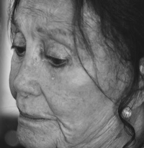
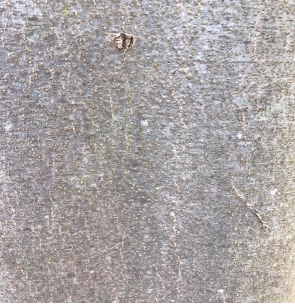
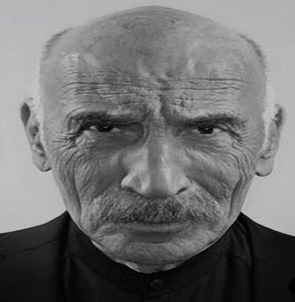
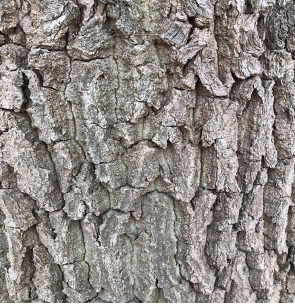
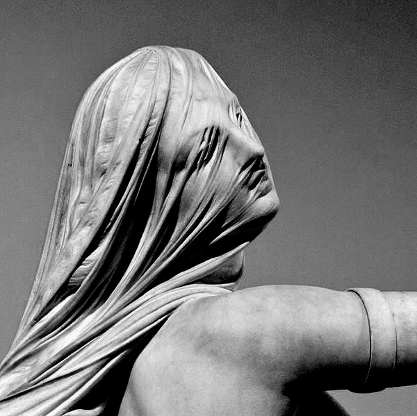
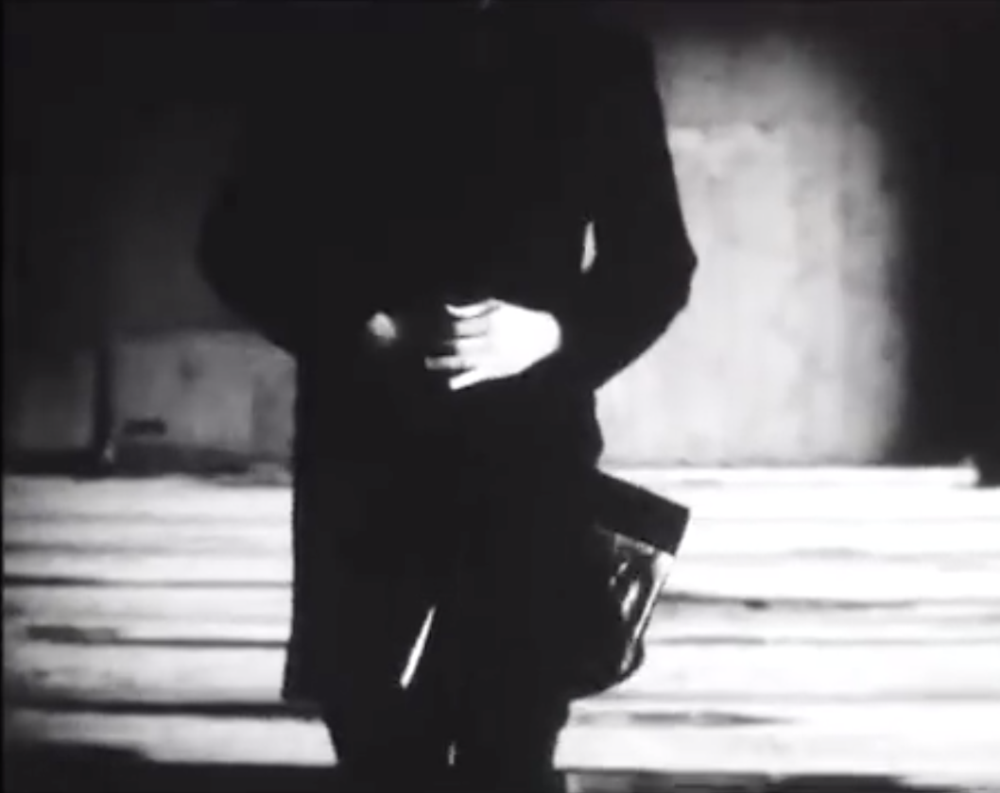
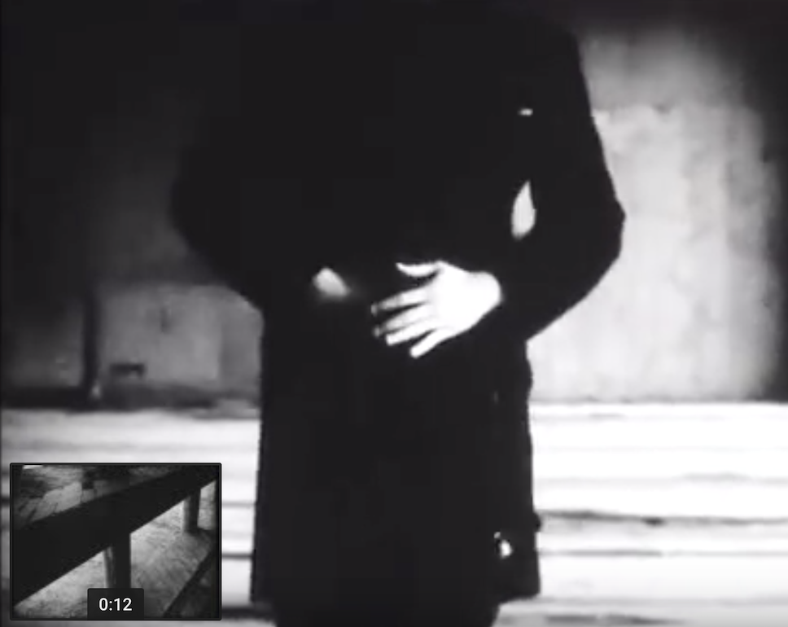
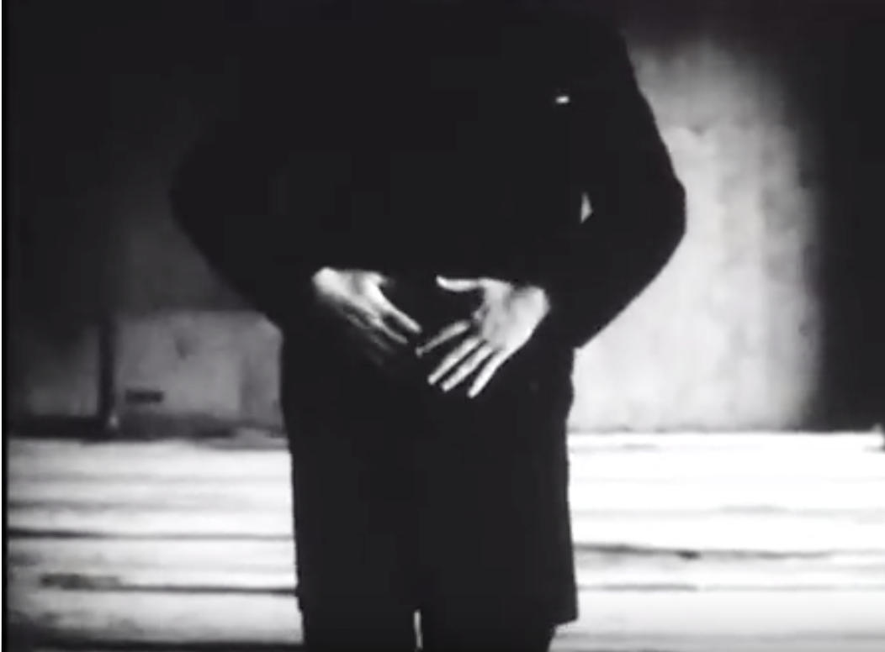

NARRATIVE PHOTOGRAPHY
The Feminine Character


The Masculine Character


CREATIVE WRITING
The ID-Scent
The natural scent determines the personality. It seems to be forgotten, that human beings take action instinctively. Due to the visual and auditory stimulus satiation of modern digital time - smelling - the olfactory sensory perception is underestimated very often in nowadays. Nevertheless, it seems to be the most powerful of all senses. After all it happens unconsciously. Only our individual scent completes our character – our real personality. Thus, the individual odour is a characteristic attribute, it has a recognition value which makes us to the person we are in reality. So, let’s remembering who we were or rather who we are.
ACTION SAMPLING
Im(mortal)

It is this capturing moment of a volatile move, an elegance, a gracefulness. You cannot held it – cause it’s fleeting, it’s transitory, it is mortal
A sculpture is immortal, it is eternal, it is static. The sculptor preserves it. An eternal gracefulness, an elegance, a presence you are attracted by.
It is so ALLURE.
Hands


